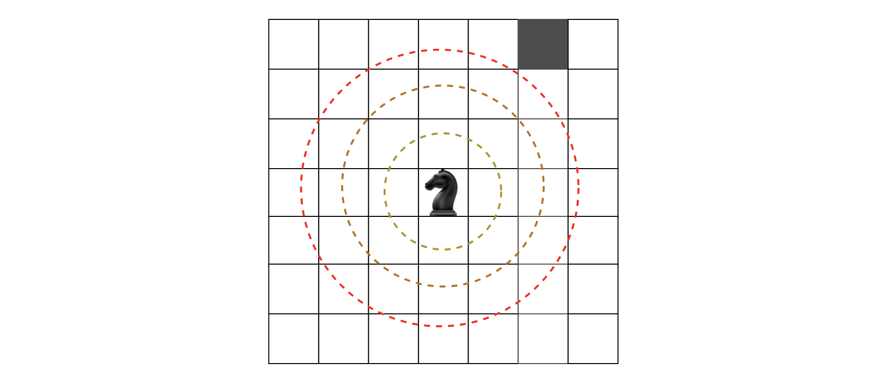
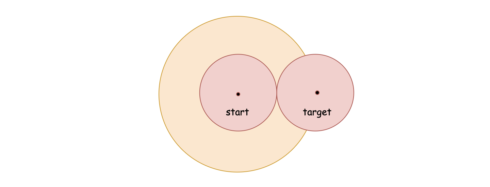
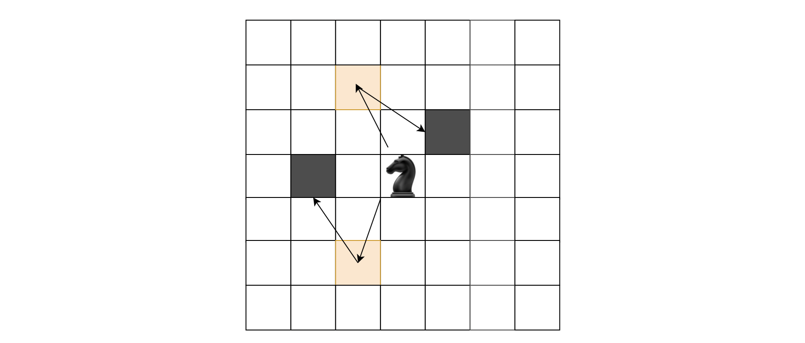

Solution
Approach 1: BFS (Breadth-First Search)
Intuition
We are asked to find the minimum steps required to travel from one point to another point on a grid.
One of the most intuitive ideas that one might come up with during an interview is brute force enumeration, i.e. we explore all possible paths between the two points and return the minimum number of moves.
It is indeed a valid solution. However, it will be beneficial to give the idea a second thought, before jumping into the implementation.
The question resembles a classical graph search problem, which is to find the shortest path between two nodes in a graph.
As one might recall, the solution to the graph search problem is called Dijkstra's algorithm.
One of the key ideas within the Dijkstra's algorithm is the strategy of BFS (Breadth-First Search), as opposed to DFS (Depth-First Search). With BFS we make sure that before exploring further towards the destination, all the immediate neighborhoods are properly explored.
The key to solving this problem is based on the BFS strategy.
The idea is that starting from the origin, we explore the neighborhood following the order that is determined by the distance to the origin, i.e. we first explore all the points within a single step from the origin, then we explore all the points that can be reached with two steps, so on and so forth.
During the exploration process, as soon as we reach the target point, we then can call the current path the shortest path, since our exploration follows the order of distance.
One can imagine the whole process as if we send a sound wave to determine the distance to an unknown object.
The sound wave propagates in all directions with the same speed, while its scope grows as a circle.
Once the circle reaches the target object, the radius is the shortest distance between the origin and the target object.

Algorithm
As a reminder, BFS is a pattern for a collection of algorithms, rather than a specific algorithm.
Additionally, given a specific BFS algorithm, there are several sub-patterns in terms of how the algorithm is implemented.
Despite the differences, all BFS algorithms share the usage of two important data structures: queue and set (or map).
A queue is used to maintain the order in which places are visited, while a set/map is used to mark which places have already been visited.
For reference, we provide a pattern to implement BFS algorithms in our Queue and BFS Explore Card.
Following the strategy of BFS, here we provide a sample algorithm to solve the problem with the following steps:
-
First, we create a queue data structure to store the places to be visited during the next step and a set data structure named visited to keep track of all the places that we have visited so far.
-
The process of BFS consists of a loop that spins around the queue. The loop ends either when we reach the target or when the queue is empty.
-
Within the main loop, we use a nested loop to iterate over the current elements in the queue. All of the elements are of the same distance from the starting point.
-
Within the nested loop, we prepare the elements that will be visited during the next step.
Note: In Java, the HashSet is not the most efficient data structure. For this reason, using the HashSet data structure to keep track of the visited cells in the Java implementation will result in the TLE (Time Limit Exceeded) exception.
To avoid the TLE exception, we use a bitmap (i.e. a two-dimentional array of boolean values) instead of a HashSet.
The range of the array is set according to the constraint of the input (i.e. ∣x∣+∣y∣<=300).
Complexity Analysis
Given the coordinate of the target as (x,y), the number of cells covered by the circle that is centered at point (0,0) and reaches the target point is roughly (max(∣x∣,∣y∣))2.
-
Time Complexity: O((max(∣x∣,∣y∣))2)
-
Due to the nature of BFS, before reaching the target, we will have covered all the neighborhoods that are closer to the start point. The aggregate of these neighborhoods forms a circle, and the area can be approximated by the area of a square with an edge length of max(2∣x∣,2∣y∣). The number of cells within this square would be (max(2∣x∣,2∣y∣))2.
-
Hence, the overall time complexity of the algorithm is O((max(2∣x∣,2∣y∣))2)=O((max(∣x∣,∣y∣))2).
-
Space Complexity: O((max(∣x∣,∣y∣))2)
-
We employed two data structures in the algorithm, i.e. queue and set.
-
At any given moment, the queue contains elements that are situated in at most two different layers (or levels). In our case, the maximum number of elements at one layer would be 4⋅max(∣x∣,∣y∣), i.e. the perimeter of the exploration square. As a result, the space complexity for the queue is O(max(∣x∣,∣y∣)).
-
As for the set, it will contain every elements that we visited, which is (max(∣x∣,∣y∣))2 as we estimated in the time complexity analysis. As a result, the space complexity for the set is O((max(∣x∣,∣y∣))2).
-
To sum up, the overall space complexity of the algorithm is O((max(∣x∣,∣y∣))2), which is dominated by the space used by the set.
Approach 2: Bidirectional BFS
Intuition
Based on the above idea of BFS, one optimization that we can apply is to perform bidirectional exploration instead of unidirectional exploration.
The reason why the bidirectional BFS is an optimized solution is illustrated in the following graph:

Intuitively, as we can see from the above graph, the area of the orange circles that we explore with bidirectional BFS is much smaller than the area of the red circle that we would explore with unidirectional BFS (twice as small, to be exact).
This can be proved mathematically. Suppose that the distance between the start and target points is d, the exploration scope covered by the unidirectional BFS will be a circle whose area is π⋅d2.
On the other hand, with the bidirectional BFS, the exploration scope will be two smaller circles whose total area is 2⋅π(2d)2=π⋅2d2, i.e. half of the area covered by the unidirectional BFS.
Algorithm
To implement the bidirectional BFS algorithm, we will double the usage of the data structures in the unidirectional BFS.
Additionally, we need to make the following adaptations:
-
Instead of using the set data structure to keep track of the visited places, we use the map data structure, which contains not only the information of visited places but also the distance between each place and the starting point.
-
Instead of only storing the coordinates of the next places to be visited in the queue, we also store the distance between each place and the starting point. This way we don't need an extra variable to keep track of distance.
With the two adaptations listed above, we can make the implementation more concise and clear. Here are some sample implementations.
Note: in theory, the above implementation of bidirectional BFS should be faster than the unidirectional BFS.
However, in reality, this is not the case for the Java implementation, due to heavy usage of sophisticated data structures, which are inefficient compared to simple arrays.
In addition to the bidirectional exploration optimization, there is also a technique called pruning that has been mentioned in some posts.
Pruning means to remove the unwanted parts, and that is exactly what this technique does.
It focuses only on the directions that might eventually lead to the discovery of the target while ignoring other directions thereby reducing our total search space.
Indeed, it can improve our performance. However, it can be tricky to ensure the correctness of the algorithm. If we accidentally prune a valid branch, we might fail to obtain the correct answer in the end.
Under the circumstance of passing an interview in a short time frame, one must weigh the risks associated with prunning against the potential gain.
Complexity Analysis
Although the bidirectional BFS cuts the exploration scope in half, compared to the unidirectional BFS, the overall time and space complexities remain the same.
We will break it down in detail in this section.
First of all, given the target's coordinate, (x,y), then the area that is covered by the two exploratory circles of the bidirectional BFS will be max(∣x∣,∣y∣)2/2.
-
Time Complexity: O((max(∣x∣,∣y∣))2)
- Reducing the scope of exploration by half does speed up the algorithm. However, it does not change the time complexity of the algorithm which remains O((max(∣x∣,∣y∣))2).
-
Space Complexity: O((max(∣x∣,∣y∣))2)
- In exchange for reducing the search scope, we double the usage of data structures compared to the unidirectional BFS.
Similarly to the time complexity, multiplying the required space by two does not change the overall space complexity of the algorithm which remains O((max(∣x∣,∣y∣))2).
Approach 3: DFS (Depth-First Search) with Memoization
Intuition
As opposed to BFS, DFS (Depth-First Search) is a pattern of an exploration algorithm, which prioritizes the depth over breadth during the exploration process.
It is not surprising that problems that can be solved with BFS can also be solved with DFS.
However, in most scenarios one method is more efficient than the other.
Indeed, this is also the case for this problem.
Symmetry of Solutions
Before explaining how we can apply the DFS algorithm to this problem, we should address the symmetry of the answers, which we haven't touched on so far.
We claim that the target (x,y), its horizontally, vertically, and diagonally symmetric points (i.e. (x,−y),(−x,y),(−x,−y)) share the same answer as the target point.
Due to the symmetry of the board (i.e. from -infinity to +infinity) and the symmetry of the allowed movements, we can rest assured that the above claim is correct, without rigid mathematical proof.
Based on the above insight, we can focus on the first quadrant of the coordinate plane where both x and y are positive.
Any target that is outside of the first quadrant, can be shifted to its symmetric point in the first quadrant by taking the absolute value of each coordinate, i.e. (∣x∣,∣y∣).
At the beginning of the DFS as well as during the process of DFS, we will always shift the exploration to the first quadrant.
Reduced Directions
Now that we have contained the exploration within the first quadrant, we can further focus on which directions we employ.
For a target that is situated in the first quadrant, though technically we could move in 8 different directions, there are only two directions (i.e. left-down and down-left) that will move us closer to the origin.
Indeed, before we reach the immediate neighborhood of the origin, we only need to explore the two left-down directions (with offsets of (−1,−2) and (−2,−1)), since the rest of the directions will deviate further away from the origin.
The immediate neighborhood of the origin, refers to the points of where the sum of coordinates is less than or equal to 2, i.e. x+y<=2.
In order to reach an immediate neighbor point from the origin, we need to do a bit of zigzag.
In the following graph, we show examples of how to reach some of the immediate neighbors via zigzag steps.

As it turns out, any immediate neighbors with (x+y==2), takes exactly 2 steps to reach when starting from the origin.
One can exhaustively verify the above insight.
Algorithm
With the above insights in mind, we can begin to work on our DFS algorithm.
Rather than starting from the origin, we start from the target and walk backwards to reach the origin.
Also, instead of exploring all 8 directions, we only need to explore the two left-down directions as we discussed before.
Assume that the function dfs(x, y) returns the minimum steps required to reach the target point (x, y), the idea of DFS can be expressed in the following formula:
dfs(x,y)=min(dfs(∣x−2∣,∣y−1∣),dfs(∣x−1∣,∣y−2∣))+1
The formula can be interpreted as such: at each step of the backward exploration process, by only exploring the left-down directions we can obtain the shortest path.
As one might notice, the above function is a recursive function.
And it is critical to define the base cases to make the definition sound.
There are in general two base cases:
-
case 1): x=0, y=0, when we reach the origin, no further steps are required to reach our goal, i.e. dfs(x, y) = 0.
-
case 2): x + y = 2, when we are at a immediate neighbor as we discussed before, it takes two more steps to reach our goal, i.e. dfs(x, y) = 2.
Note: one might argue that there is another base case to cover, which is x + y = 1, e.g. x=1, y=0.
This is not our base case though, because by taking one more step further, it will be reduced down to our base case 2), i.e. |x-1| + |y-2| = 2.
Given the above definitions, one can intuitively implement them with a recursive function.
Additionally, it is important to apply the memoization technique to prevent duplicate calculations from occurring during the recursive process.
The above form of recursion with memoization is also known as Top-Down Dynamic Programming, where we work out the solutions from top to down (base cases), and we reuse the intermediate results (with memoization) to speed up the calculation.
It is also feasible to start from the origin and move towards the target.
Accordingly, we should adapt the conditions in the base cases.
Complexity Analysis
Let (x,y) be the coordinate of the target.
Follow-up
For math lovers, as it turns out, we can derive a mathematical formula based on the DFS solution, which can solve the problem in O(1) time complexity.
Fore more details, check out the post by poorvank in the discussion forum.
The solution is definitely brilliant. However, it goes without saying that it is unlikely that one would be expected to come up with such a solution during an interview.
It could be equally difficult to defend and explain the solution to the interviewer.